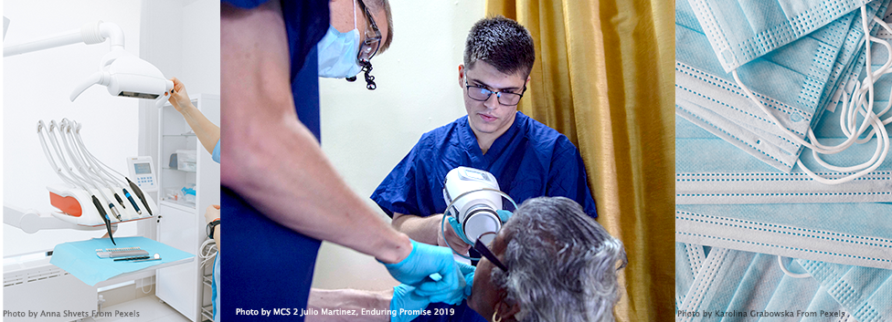

USNS Comfort
This was taken during Eduring Promise-2019 of the coast of Colombia.
Hello Everyone. Here you can view my Resume and my job expertiese. Currently, I work at Portsmouth Naval Hospital in the Oral MaxilloFacial Clinic. I am a Certified Surgical Technologist and specialized in Oral MaxilloFacial surgeries. These cases includes Bilateral Sagittal Split Osteotomy, Leforts, Zygomatic Fractures, and TMJ Concept cases and scopes. Currently, I am the Work Center Supervisor for the Clinic and am up for promotion of my next paygrade, Hospitalman Second Class.
Click Here for my Resume. I've been on two humanitarian deployments on the USNS Comfort to provide humanitarian aid to South America and New York City. On the first deployment, I went to over twelve countries and assisted surgeons and dentists in make shift hospitals to help provide medical and dental aide. There, I help restore teeth and extracted any necessary teeth while also assited surgeons in restoring cleft palates, cleft lips, and other surgeries that help change the lives of the local populations. I've made friends and different aquantices and overall, I believe that this experience have made me a more humble person. I also assisted in providing aide to NYC during the Covid-19 pandemic aboard the USNS Comfort. My role consisted of maintaining the readiness of the Dental Department's Sterile Processing Department as well as assisting the Oral Surgeon in any OMFS Cases.
This was taken during Eduring Promise-2019 of the coast of Colombia.
.png)
This was taken during the humanitarian mission to New York City in order to provide relief to the city during the Covid-19 Pandemic.
Pulling into Manhattan aboard the USNS Comfort
I helped the dentist put a new filling on this patient and helped preserve their smile.
I assisted the Oral Surgeon to extract an infected tooth before the infection spread.

I set up and ran sterilization in Equador which consisted of decontaminating and sterilizing the instrumnets used for oral surgery, general dentistry, and hygiene.